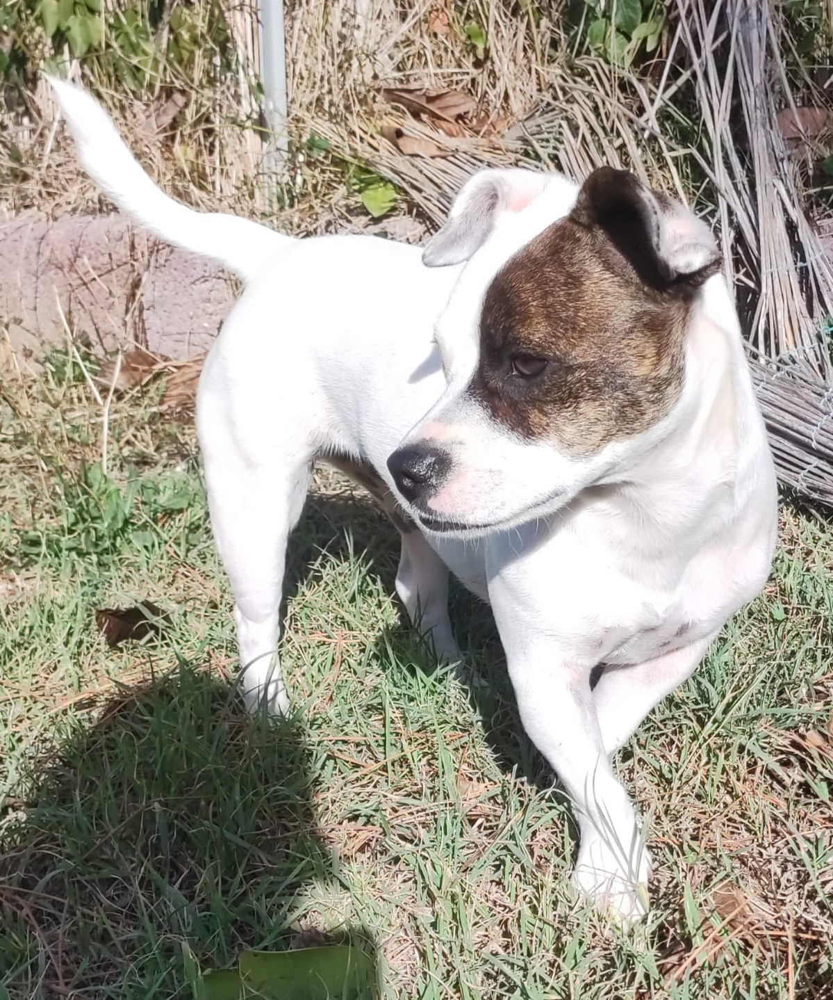
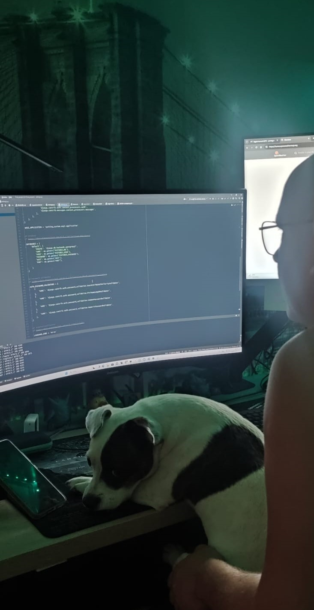

Java – маленька енергійна собака
Походження, характер та поведінка
Java народилася 13 квітня 2022 року. Вона – унікальне поєднання двох
порід: джека-рассела та французького бульдога.
Від першого вона успадкувала енергійність і спритність, а від другого –
компактність та милий вираз мордочки. Java – справжній ураган
позитиву!
Вона любить грати, бігати та досліджувати світ. Її розумність і
допитливість роблять її чудовим напарником для ігор та тренувань.
Життя у творчій сім’ї

Java живе у сім’ї, де господар – розробник на Python, а господиня –
UX/UI дизайнер. Вона звикла проводити час у компанії ноутбуків,
планшетів та графічних планшетів.
Інколи навіть намагається допомагати, розміщуючись на клавіатурі або
спостерігаючи за робочими процесами.
Цікаві факти про Java,та улюблені ігри
- Гра з м’ячиком
- Вивчення нових команд
- Спостереження за дизайном та кодом
- Ласування смаколиками
- Любить сидіти на колінах, поки господар пише код
- Завжди знає, коли пора перерви, і нагадує про неї